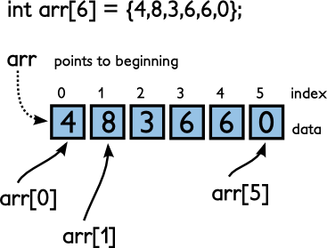
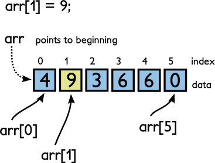

Arrays are how we store many values of the same type in one
variable. An array can be of any size. If an array is of size n, then
the elements (values) of the array can be accessed with indices 0
through n-1. The memory "allocated" to an array is contiguous; you can
think of each element sitting right next to its siblings somewhere in
memory. Here is an example of how we create arrays, and give them
their values:

// "int arr[6];" means create an integer array with 6 elements int arr[6] = {4,8,3,6,6,0}; cout << arr[0] << endl; // prints 4 cout << arr[1] << endl; // prints 8 cout << arr[5] << endl; // prints 0
We can change the values of an array in the same way:

arr[1] = 9; cout << arr[0] << endl; // prints 4 cout << arr[1] << endl; // prints 9 cout << arr[5] << endl; // prints 0
The value of the array itself (in this case, arr), is actually not an
integer value but the memory location where the array starts. We can
print this location, but it's more-or-less meaningless:
cout << arr << endl; // prints something like "0x22cd20"
Note that we cannot ask an array how large it is. Once the array is
created, the computer essentially forgets how big it is. The size of
the array is something we need to keep track of ourselves. (This is
unlike the string function length(), which we can use to determine how
big a string is.)
We can assign the values to an array with a loop if we don't want to
type all the values individually. In this case, the array is created
by specifying a size but the values are missing. Inside a for() loop
we will set the values:
int arr[100]; for(int i = 0; i < 100; i++) { arr[i] = i*i*i + 10; // assign each element some silly value }
An alternative is to get the values from the user. In the following example, we first ask for the size of the array, then ask for each value.
int n; cout << "How many values? "; cin >> n; int numbers[n]; for(int i = 0; i < n; i++) { cout << "Enter value: "; cin >> numbers[i]; }
Finally, we can provide the values in the code, like we did
previously. However, note that if your make an array of size n but you
do not provide n values between the braces, then the first values will
be put in the array but the values that you have not defined will all
be 0. For example:
// this array has values {3, 2, 0, 0, 0} int xs[5] = {3, 2}; // this array has values {3.0, 2.0, 0.0, 0.0, 0.0} double vals[5] = {3.0, 2.0};
Find the sum of an array:
int vals[100]; // put values in the array... int sum = 0; for(int i = 0; i < 100; i++) { sum += vals[i]; }
Find the product of an array:
// assume we have some variable "size"... double vals[size]; // put values in the array... double product = 1.0; for(int i = 0; i < size; i++) { product *= vals[i]; }
Print the contents of an array:
// this code prints an array like this: "{1, 3, 5, 2, 3}" int xs[100]; // put values in the array... cout << "{"; for(int i = 0; i < 100; i++) { cout << xs[i]; if(i != 99) { cout << ", "; } } cout << "}";
Print the contents of an array in a function:
#include <iostream> using namespace std; void printIntegerArray(int vals[], int size) { cout << "{"; for(int i = 0; i < 100; i++) { cout << vals[i]; if(i != (size-1)) { cout << ", "; } } } int main() { int n; // cin >> n ... int myArray[n]; // fill array... printIntegerArray(myArray, n); return 0; }
Sum a double array in a function:
#include <iostream> using namespace std; double sumDoubleArray(double xs[], int n) { double sum = 0.0; for(int j = 0; j < n; j++) { sum += xs[j]; } return sum; } int main() { int size; // cin >> size ... double array[size]; // fill array ... double sum = sumDoubleArray(array, size); cout << "Sum is " << sum << endl; return 0; }
Copy one array to another, in reverse, in a function:
#include <iostream> using namespace std; void copyIntegerArrayReversed(int arr1[], int arr2[], int n) { for(int i = (n-1), j = 0; i >= 0; i--, j++) { arr2[j] = arr1[i]; } } int main() { int size; // cin >> size ... int myArray[size]; // fill array ... // create second array, but don't fill it yet int myArray2[size]; // use the function to fill the array copyIntegerArrayReversed(myArray, myArray2, size); // print array contents... return 0; }
Concatenate two arrays (make a new array that contains the contents of two arrays), in a function:
#include <iostream> using namespace std; void appendTwoIntegerArrays(int arr1[], int arr2[], int arr3[] int size1, int size2) { for(int i = 0; i < size1; i++) { arr3[i] = arr1[i]; } for(int i = 0; i < size2; i++) { arr3[i+size1] = arr2[i]; } } int main() { int size1, size2; // cin >> size1 >> size2 ... int array1[size1]; int array2[size2]; int array3[size1 + size2]; // make it big enough to contain both // fill array1, fill array2 ... appendTwoIntegerArrays(array1, array2, array3, size1, size2); // print array3 contents ... return 0; }
#include <iostream> #include <cctype> using namespace std; int maxCount(int counts[]) { int mc = 0; for(int i = 0; i < 26; i++) { if(mc < counts[i]) { mc = counts[i]; } } return mc; } int sum(int counts[]) { int s = 0; for(int i = 0; i < 26; i++) { s += counts[i]; } return s; } void printHistogram(int counts[]) { int mc = maxCount(counts); int s = sum(counts); double factor = 30.0 / mc; cout.precision(2); cout.setf(ios::fixed, ios::floatfield); char c; for(int i = 0; i < 26; i++) { c = 97 + i; cout << c << ": "; int times = (int)(factor * counts[i]); for(int j = 0; j < times; j++) { cout << "*"; } cout << " " << 100 * (double)counts[i] / (double)s << "%" << endl; } } int main() { int counts[26] = {0}; char c; while(cin >> c) { if(isalpha(c)) { c = tolower(c); counts[c - 97]++; } } printHistogram(counts); return 0; }
After compiling, use the program like so:
a.out < text1.txt
Example output (The Adventures of Sherlock Holmes):
a: ******************* 8.12% b: *** 1.49% c: ***** 2.45% d: ********** 4.29% e: ***************************** 12.30% f: ***** 2.08% g: **** 1.83% h: **************** 6.65% i: ***************** 6.98% j: 0.11% k: ** 0.82% l: ********* 3.96% m: ****** 2.72% n: **************** 6.65% o: ******************* 7.81% p: *** 1.60% q: 0.10% r: ************* 5.71% s: *************** 6.28% t: ********************** 9.04% u: ******* 3.05% v: ** 1.03% w: ****** 2.58% x: 0.13% y: ***** 2.19% z: 0.03%